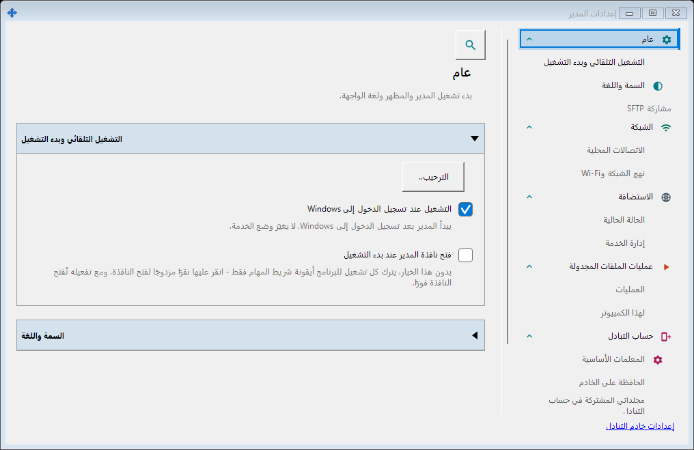
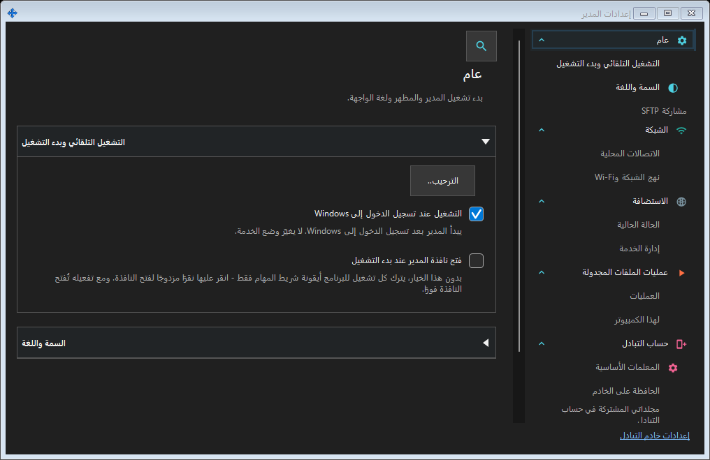
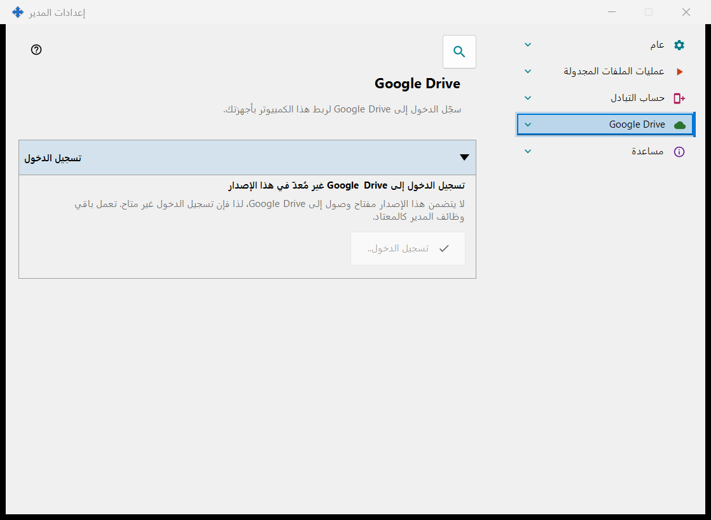
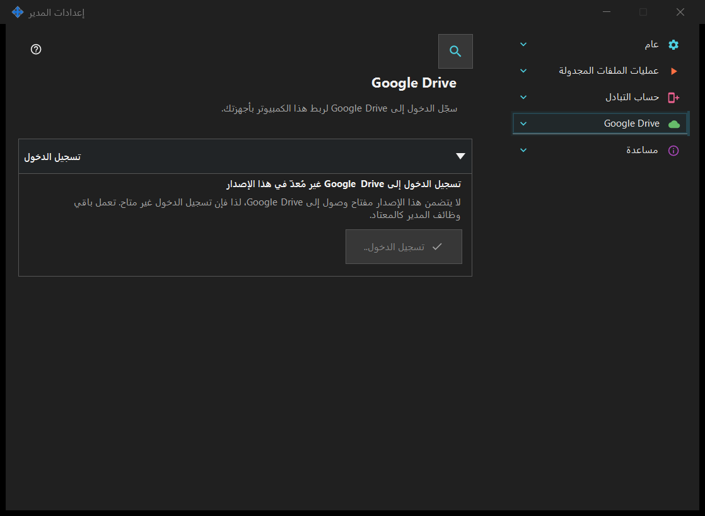

إعدادات المدير
إعدادات المدير
الغرض من هذه النافذة
بدء التشغيل والمظهر واللغة والحساب البعيد والنشر والحافظة والعمليات المجدولة تخص المدير ولا تتطلب خادماً محلياً. إذا كان مكوّن مشاركة SFTP مثبتاً فإن صفحاته تشكّل مجموعة في هذه النافذة.


بهذا الترتيب
افتح من منطقة الإعلام أو روابط المكونات. فتح النافذة وإغلاقها لا يشغل أو يوقف خادماً. تسجيل الدخول البعيد لا يتطلب خادماً محلياً.
عناصر النافذة
إعدادات المدير
بدء التشغيل والمظهر واللغة والحساب البعيد والنشر والحافظة والعمليات المجدولة تخص المدير ولا تتطلب خادماً محلياً. إذا كان مكوّن مشاركة SFTP مثبتاً فإن صفحاته تشكّل مجموعة في هذه النافذة. افتح من منطقة الإعلام أو روابط المكونات. فتح النافذة وإغلاقها لا يشغل أو يوقف خادماً. تسجيل الدخول البعيد لا يتطلب خادماً محلياً.
إعدادات المدير
بدء التشغيل والمظهر واللغة والحساب البعيد والنشر والحافظة والعمليات المجدولة تخص المدير ولا تتطلب خادماً محلياً. إذا كان مكوّن مشاركة SFTP مثبتاً فإن صفحاته تشكّل مجموعة في هذه النافذة. افتح من منطقة الإعلام أو روابط المكونات. فتح النافذة وإغلاقها لا يشغل أو يوقف خادماً. تسجيل الدخول البعيد لا يتطلب خادماً محلياً.
Google Drive
- افتح Share Manager، ثم افتح «إعدادات المدير» واختر صفحة «Google Drive». تحتاج إلى حساب Google واتصال بالإنترنت. لا حاجة إلى تطبيق Google Drive لنظام Windows، ولا تنشئ بنفسك أي مشروع أو مفتاح أو إعداد في Google.
- اضغط «تسجيل الدخول..». يفتح المتصفح الافتراضي صفحة Google: اختر الحساب، وسجّل الدخول هناك، ووافق على الوصول المعروض. تُكتب كلمة المرور في صفحة Google فقط، وليس في هذا التطبيق أبدًا. يمكنك هناك أيضًا إلغاء تسجيل الدخول أو رفض الوصول؛ وعندها لا يُخزَّن شيء.
- ارجع إلى Share Manager: يعرض السطر الغامق «تم تسجيل الدخول إلى Google Drive»، ويمكنك إغلاق علامة تبويب المتصفح. إذا لم يُفتح المتصفح، فتحقق من المتصفح الافتراضي واضغط «تسجيل الدخول..» مرة أخرى. وإذا عرض المتصفح خطأً، أو بقيت الصفحة تعرض «في انتظار تسجيل الدخول في المتصفح..»، فاضغط «إلغاء» وسجّل الدخول من جديد. يبقى تسجيل الدخول على هذا الكمبيوتر: بعد إغلاق Share Manager أو الخروج من Windows أو إعادة تشغيل الكمبيوتر يُستخدم مرة أخرى دون المتصفح ما دامت Google تُبقي الوصول صالحًا.
- للتبادل مع جهاز آخر، سجّل الدخول هناك أيضًا بحساب Google نفسه، في صفحة Google Drive الخاصة بذلك الجهاز: على كمبيوتر آخر في Share Manager الخاص به، وعلى هاتف في تطبيق Android. لا ترى الأجهزة المسجّلة الدخول بحسابات Google مختلفة بعضها بعضًا، ويحتاج الجهازان كلاهما إلى إصدار من التطبيق يتضمن صفحة Google Drive. تسجيل الدخول وحده لا يرسل شيئًا: ما يمر عبر Google Drive موصوف في مساعدة الحافظة والعمليات المجدولة والمجموعة «قائمة الانتظار على Google Drive».
- يطلب التطبيق فقط الوصول إلى مجلده المخفي الخاص على Google Drive الخاص بك (النطاق drive.appdata). لا يرى ملفاتك الأخرى على Google Drive ولا يتصفحها ولا يزامنها، ولا يتلقى عنوان بريد إلكتروني ولا بيانات الملف الشخصي. ما تتبادله أجهزتك يشغل مساحة على Google Drive الخاص بك؛ وتعرضه المجموعة «قائمة الانتظار على Google Drive» وتتيح حذف حزمة. يحذف «الخروج على هذا الجهاز» سجلات هذا الكمبيوتر من المجلد المخفي، ويُلغي الوصول لدى Google، ويحذف تسجيل الدخول المخزَّن على هذا الكمبيوتر. بعد ذلك قد تُنهي Google الوصول على أجهزتك الأخرى المسجّلة الدخول بالحساب نفسه أيضًا؛ وإذا أبلغ أحدها أن تسجيل الدخول فيه لم يعد يعمل، فسجّل الدخول هناك من جديد. لإعادة ربط هذا الكمبيوتر، اضغط «تسجيل الدخول..».
- إذا حدث خطأ ما، يذكر السطر الواقع تحت الحالة ما حدث. لا اتصال، أو خطأ من Google: يعيد التطبيق المحاولة تلقائيًا، ولا يلزمك فعل شيء. أُلغي تسجيل الدخول أو رُفض الوصول: اضغط «تسجيل الدخول..» مرة أخرى متى شئت. حساب تديره مؤسسة يحظر مسؤولها التطبيق: سجّل الدخول بحساب Google آخر أو راجع المسؤول. رسالة تفيد بأن تسجيل الدخول لم يعد يعمل: أُلغي الوصول أو انتهت صلاحيته، اضغط «تسجيل الدخول..» مرة أخرى. لا توجد مساحة خالية على Google Drive الخاص بك: حرّر بعض المساحة أو احذف حزمًا من قائمة الانتظار. حد الرفع اليومي: انتظر حتى اليوم التالي. «تسجيل الدخول إلى Google Drive غير مُعدّ في هذا الإصدار»، أو رسالة تفيد بأن مفتاح تسجيل الدخول لهذا التثبيت لم يعد مقبولًا: ثبّت الإصدار الحالي من التطبيق من موقعه الرسمي؛ وتعمل بقية وظائف Share Manager في هذه الأثناء.
تتيح هذه الصفحة تسجيل دخول هذا الكمبيوتر إلى حساب Google الخاص بك ليتمكن التطبيق من استخدام مجلده المخفي الخاص على Google Drive الخاص بك. اضغط «تسجيل الدخول..»: يُفتح المتصفح الافتراضي، وتوافق على الوصول لدى Google، فتعيد Google الرد إلى هذا الكمبيوتر عبر عنوان محلي؛ ثم يمكنك إغلاق علامة تبويب المتصفح. الإذن الوحيد المطلوب هو الوصول إلى المجلد المخفي الخاص بالتطبيق على Google Drive الخاص بك (النطاق drive.appdata): لا يستطيع التطبيق رؤية أي ملف آخر على Google Drive الخاص بك، ولا يتلقى عنوان بريد إلكتروني ولا بيانات الملف الشخصي. إذا منحت Google وصولًا مختلفًا عن المطلوب يُرفض تسجيل الدخول. يعرض السطر الغامق الحالة. «لم يتم تسجيل الدخول إلى Google Drive»: يتوفر «تسجيل الدخول..»؛ وإذا أُلغي الوصول أو انتهت صلاحيته يذكر السطر الذي تحته ذلك ويطلب تسجيل الدخول مرة أخرى. «في انتظار تسجيل الدخول في المتصفح..»: أكمل تسجيل الدخول في المتصفح أو اضغط «إلغاء». «تم تسجيل الدخول إلى Google Drive»: هذا الكمبيوتر مرتبط بحساب Google Drive الخاص بك، ويظهر اسمه ومعرّفه المختصر. «Google Drive غير متاح حاليًا»: يذكر السطر الذي تحته السبب - لا اتصال، أو بلوغ حد الرفع اليومي، أو عدم وجود مساحة خالية على Google Drive الخاص بك، أو خطأ من Google؛ وعند انقطاع الاتصال أو وقوع خطأ يعيد التطبيق المحاولة تلقائيًا. يظهر «جارٍ تسجيل الخروج من Google Drive..» أثناء تنفيذ تسجيل الخروج. يطرح «الخروج على هذا الجهاز» سؤالًا واحدًا، والإجابة الافتراضية هي «لا». بعد «نعم» يُلغي الوصول لدى Google، ويحذف سجلات هذا الكمبيوتر من المجلد المخفي على Google Drive الخاص بك، ويحذف رمز تسجيل الدخول المخزَّن على هذا الكمبيوتر؛ ويذكر سطر تحت الأزرار عدد السجلات المحذوفة، أو أن Google لم تؤكد إلغاء الوصول، وعندها يمكنك إلغاؤه في إعدادات حساب Google. في إصدار بلا مفتاح وصول إلى Google تعرض الصفحة «تسجيل الدخول إلى Google Drive غير مُعدّ في هذا الإصدار»، ويكون «تسجيل الدخول..» معطّلًا، وتعمل باقي وظائف المدير كالمعتاد. ما دام هذا الكمبيوتر مسجّل الدخول، تعمل أوامر الحافظة في Share Manager عبر Google Drive أيضًا، ويمكن للعملية المجدولة أن تتخذ «عبر Google Drive» مصدرًا أو وجهة، وتعرض قائمة موارد العارض المجلدات التي تنشرها أجهزتك الأخرى هناك. تعرض المجموعة «قائمة الانتظار على Google Drive» ما تتبادله أجهزتك والمساحة التي يشغلها؛ حدّد حزمة واضغط «حذف الحزمة» لإزالتها من Google Drive الخاص بك. عبر Google Drive، تُحفظ الملفات والحافظة في حسابك الخاص لدى Google، مثل ملفاتك الأخرى على Google Drive؛ ولا يشارك أي خادم تبادل.


إعدادات المدير
بدء التشغيل والمظهر واللغة والحساب البعيد والنشر والحافظة والعمليات المجدولة تخص المدير ولا تتطلب خادماً محلياً. إذا كان مكوّن مشاركة SFTP مثبتاً فإن صفحاته تشكّل مجموعة في هذه النافذة. افتح من منطقة الإعلام أو روابط المكونات. فتح النافذة وإغلاقها لا يشغل أو يوقف خادماً. تسجيل الدخول البعيد لا يتطلب خادماً محلياً.
إعدادات المدير
من المساعدة / حول اختر تصدير السجلات للتحليل. تُجمع كل السجلات المحلية المحتفظ بها لـ Media Exchange Server وSFTP والتثبيت والأدوات المساعدة والمدير والعارض، حتى عند توقف الخوادم. لا تُنزّل سجلات بعيدة. تُزال الأسرار؛ تُعرض المصادر المقتطعة أو المحذوفة أو غير المقروءة ويصبح الأرشيف جزئيًا. الإرسال للمؤلف يفتح مسودة مع ZIP المراجع مرفقًا؛ أنت تقرر الإرسال. إذا تعذر المرفق فأضف ZIP يدويًا. الإظهار في مستكشف الملفات يحدد ZIP: انسخه والصقه في مجلد آخر. عند الفشل يمكنك تحديد المسار ونسخه من المراجعة. يبقى الأرشيف بعد الإظهار أو طلب البريد، حتى عند إلغاء الرسالة. الإلغاء قبل هذين الإجراءين يحذفه. ينظف تصدير لاحق الأرشيفات غير المستخدمة الأقدم من سبعة أيام؛ انسخ ZIP للاحتفاظ به أطول. فوق 20 ميبيبايت يبقى المستكشف متاحًا ويُعطل تسليم البريد.